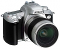

器材
党
全部器材
产品年表
名词百科
榜单
器材库
> 胶片单反相机 > F75

尼康
F75
4.32
综合评分
分类
胶片单反相机
点评
0 条
图片
0 张
评测
0 篇
Nikon于2003年2月18日宣布将于2003年3月8日将发售新型AF SLR：Nikon F75(美国型号为N75，日本型号为U2)
产品类型
胶片单反相机
综合评分
4.32分
无忌评测
暂无评测
规格参数
网友点评
(0)
产品图 / 样片
(0)
评测文章
(0)
规格总览
日本地区型号
U2
北美地区型号
N75
产品类型
自动对焦胶片单反相机
发布日期
2003-03-08
厂家推荐价格
64,000.00 （日元）
镜头卡口
Nikon F
停产
是
取景规格
取景器
眼平五棱取景器, 固定
取景放大倍率
约 0.68~0.60x倍
取景视点
17mm
屈光度调节范围
-1.5~0.8
反光镜
快速瞬回半透明
景深预视
有
对焦系统
自动对焦系统类型
TTL相位检测系统
对焦点
5
AF检测范围
EV -1 - 19EV
对焦模式
单次AF, 连续AF
焦点预测
有
AF辅助灯
有
曝光控制
测光模式
中央重点测光, 多分区评价测光, 点测光
测光范围
SP：EV 4-20EV
曝光模式
PIC, P（程序自动曝光）, A（光圈优先自动曝光）, S（快门速度优先自动曝光）, M（手动测光曝光）
ISO感光度
DX：ISO 25-5000/非DX：ISO 100
曝光补偿
±2EV以1/2EV级调整
自动包围曝光
3，±2 EV(1/2、1、1.5、2)
多重曝光
有
自动曝光锁
有
快门
快门类型
纵走式焦平面快门
快门速度
30-1/2000s + B
闪光同步速度
1/90s秒
B门
有
自拍
10秒
无线遥控
有
快门线插孔
无
内置闪光灯
闪光模式
TTL
闪光指数
12
后帘同步
有
外接闪光灯
PC插孔
无
过片系统
最高连续过片速度
1.5fpsfps
用户自选功能
用户自选功能
无
电源
电池
2 x CR2
外观
尺寸
F75：131 x 92.5 x 65/F75D：131 x 92.5 x 67.5mm
重量
F75：380/F75D：385g
该产品暂无存档的网友点评
该产品暂无存档的产品图
评测 / 相关文章
该产品暂无存档的评测文章